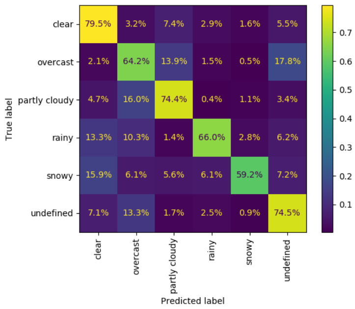

Weather Classifier¶

Purpose¶
The purpose of this model is to detect the weather condition that the driver has vision of. The motivation here being that rain/snow are risky conditions to drive in. Potentially other sources of weather data (i.e. such as NOAA) could be used to source this information. However, a road trip may span multiple weather conditions, and the proposed method would allow for more granular details about what the weather looked like from the driver's view at any given moment.
The proposed model takes a single 3 x 224 x 224 image as input, and outputs probability of 6 classes:
1) Clear
2) Partly Cloudy
3) Overcast
4) Rainy
5) Snowy
6) Undefined
In practice, the Undefined class is mostly used for night-time conditions where the sky is not visible, and road conditions do not allow for the assessment of the weather.
Data Considerations¶
The model was trained using the BDD100k dataset as described previously. This dataset has approximately 70,000 training images and 10,000 validation images.
Images were resized down to 224 x 224 pixels in order to align with the Sagemaker Image Classification container.
Initially, the dataset included 7 classes of weather. However, "Foggy" was not well populated. For this reason, that class was combined with the existing "Undefined" class. Additionally, the dataset was highly imbalanced. As shown below, data was down-sampled for training. Validation statistics reported further down are based upon the original validation dataset.
| Level | Original Count | Down Sample Rate | Final Count |
|---|---|---|---|
| Clear | 37,344 | 15% | 5,518 |
| Partly Cloudy | 4,881 | 100% | 4,881 |
| Overcast | 8,770 | 75% | 6,554 |
| Rainy | 5,070 | 100% | 5,070 |
| Snowy | 5,549 | 100% | 5,549 |
| Undefined | 8,249 | 75% | 6,202 |
| Total | 69,863 | 48.3% | 33,774 |
Model Architecture¶
The model was trained using the AWS Sagemaker Image Classification container. The model is trained using MXNet, it is a convolutional neural network. Beyond that, the AWS user documentation unfortunately does not give a ton of details on the architecture built behind the scenes. A raw visualization of the architecture exported from Sagemaker can be found here. It appears to match the ResNet architecture1 terminating with a 6-node classification head.
{kind=link}
Below are the key hyperparameters that were selected:
| Hyperparameter | Value | Notes |
|---|---|---|
| Epochs | 6 | |
| Pretrained Weights | 1 | AWS provides weights pretrained on the ImageNet with 11,000 categories |
| Image Size | 3 x 224 x 224 | Pretrained weights are only supported at this image size |
| Layers | 18 | The minimum supported layer count. The model did show elements of overfitting even at this restricted layer count |
| Optimizer | Adam | |
| Learning Rate | 0.001 | |
| Mini Batch Size | 16 |
Performance¶
Overall the performance of the model appears to be middle of the road with a 74% accuracy on validation. In general, the model's accuracy seems to be impacted by the fuzzy line between classes: at what point does a cloudy sky become "rainy"? In reviewing mis-classification examples, commonly the ground-truth label was unclear. For example, an image of clear weather sky, but a small amount of snow on the side of the road was labeled "snowy". While that label is not objectively wrong, I think reasonable minds would agree with the models label of "clear" as well.
Find additional fit statistics in the appendix.
Future Enhancements¶
The model trained on the BDD100k dataset does not exactly meet the intended use of that data. Teaching autonomous vehicles to drive isn't directly in line with my intended use (identifying risks to a human driver). While it was good enough for a school project, future research should look to collect a different dataset more in line with this use case. A big gap applicable to this "weather" model was the lack of focus on dangerous weather conditions. The difference between "Clear" and "Partly Cloudy" is almost surely not meaningful for the intended downstream use of this model. Ideally, there would be more classes of adverse weather (i.e. foggy, flooded, roads fully covered in snow), and less granularity of the "safe" classes.
Additionally, looking to rebuild the model in a different tool stack would likely be good. The AWS Sagemaker Image Classification container was used as a learning opportunity, but the lack of control I had over the model was limiting. The model was prone to overfitting, and that sagemaker container does not give many options for a data scientist to mitigate those issues.
Appendix¶
F1 Score¶
| precision | recall | f1-score | support | |
|---|---|---|---|---|
| Clear | 0.92 | 0.79 | 0.85 | 5346 |
| Partly Cloudy | 0.46 | 0.74 | 0.57 | 738 |
| Overcast | 0.58 | 0.64 | 0.61 | 1239 |
| Rainy | 0.66 | 0.66 | 0.66 | 738 |
| Snowy | 0.78 | 0.59 | 0.67 | 769 |
| Undefined | 0.58 | 0.75 | 0.65 | 1170 |
| accuracy | 0.74 | 10000 | ||
| macro avg | 0.66 | 0.70 | 0.67 | 10000 |
| weighted avg | 0.77 | 0.74 | 0.75 | 10000 |
Confusion Matrix¶

Model Interpretation¶
Below is an example image from each class where the model correctly labeled the image. When reading these images, a blue region means that it contributed to the confidence, and a red region means it detracted from the confidence.
{kind=link}
{kind=link}
{kind=link}
{kind=link}
{kind=link}
{kind=link}